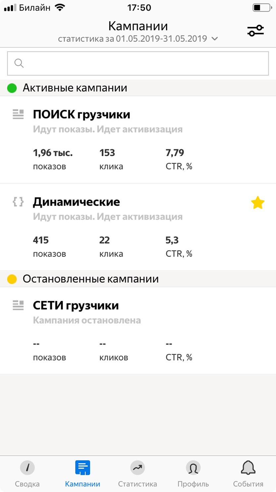
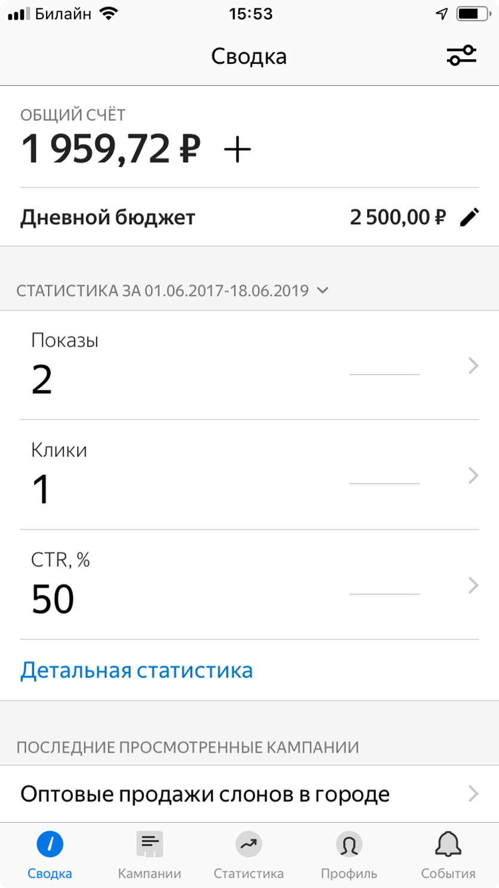
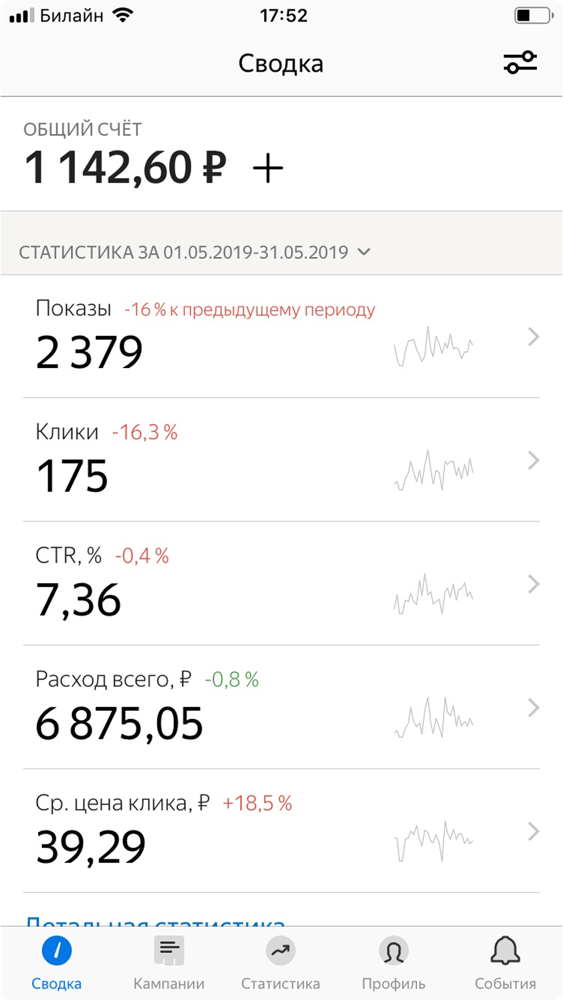

Turning Direct into a
mobile-first tool for SMBs
We redesigned the app into a simple, scalable tool that enables small businesses to launch and manage campaigns directly from a phone.
Mobile became the channel
for scaling SMBs.
In 2024, mobile became a key channel for scaling SMB advertisers in Direct. The goal was to improve activation, retention, and LTV.
The existing app could not support growth.
In 2024, mobile became a key channel for scaling SMB advertisers in Direct. The goal was to improve activation, retention, and LTV.



Rebuild from scratch, mobile-first.
Direction
We rebuilt the app from scratch, focusing on making mobile a simple entry point for SMB users.
Six core activation scenarios.
No PM. I led the product direction.
Team
There was no product manager. I led the product direction and aligned the team — 2 designers, an architect, and engineering.
Campaign creation, step by step.
Shift
We redesigned campaign creation from a single-page desktop flow into a step-by-step mobile experience — one action per screen, reduced cognitive load.
A modular, unified dashboard.
Why
One dashboard for all campaign types — consistent structure, flexible blocks, reduced complexity.